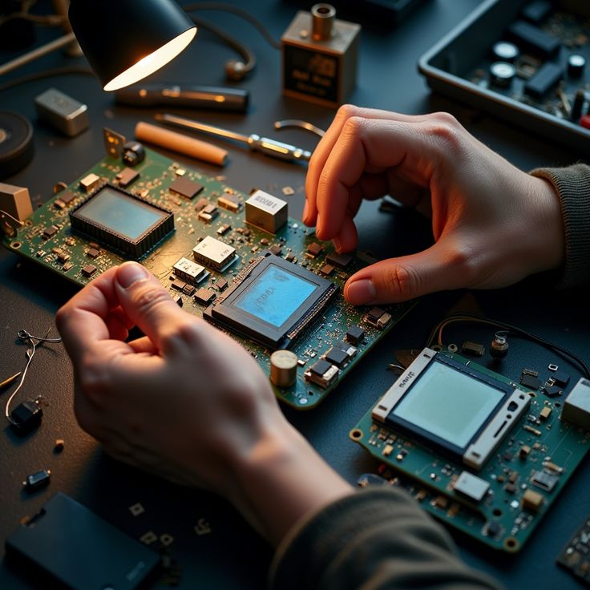

Mes Passions
Réseaux Informatiques
Passionné par l'architecture des systèmes de communication. Je m'intéresse particulièrement à la configuration des routeurs, des switchs et à l'optimisation des flux de données.
Cyber Sécurité
La protection des données et l'éthique du hacking me fascinent. J'étudie les vulnérabilités système, le pen-testing et les protocoles de défense pour sécuriser les environnements numériques.

Programmation Web
J'aime transformer des idées en solutions concrètes. Je me concentre sur la création d'interfaces fluides, le développement backend et la maîtrise de frameworks comme Laravel.

Systèmes Embarqués
L'interaction entre le code et le matériel me passionne. Explorer le fonctionnement des microcontrôleurs et le développement de solutions IoT fait partie de mes domaines favoris.